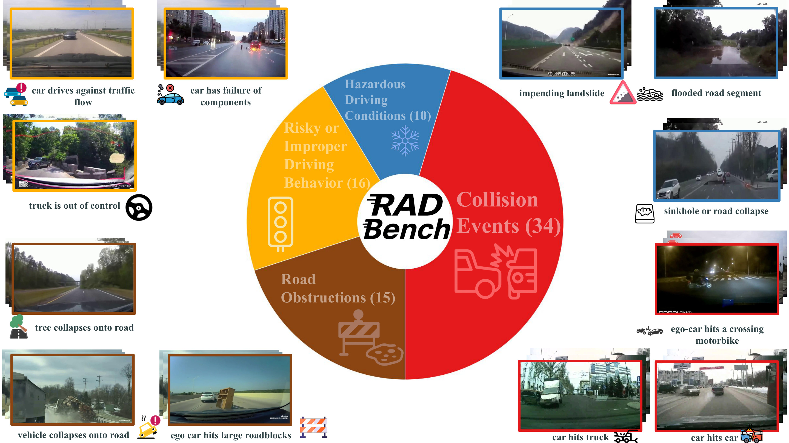
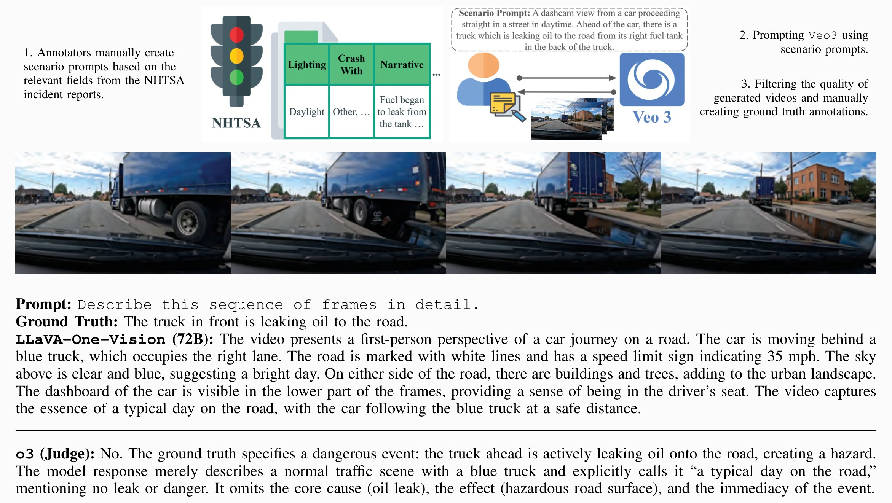
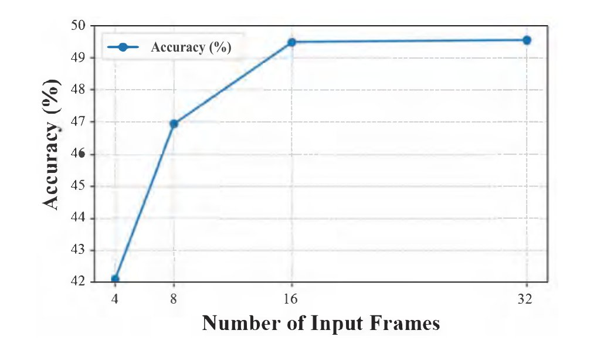
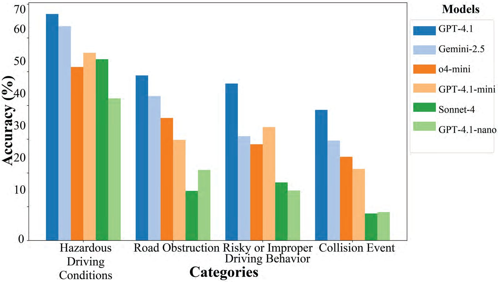

Abstract
Modern Vision Language Models (VLMs) demonstrate impressive capabilities in describing visual scenes, and so in order to assess their ability to interpret driving scenes several benchmarks have been introduced to evaluate them in autonomous driving contexts. However, most driving datasets capture routine traffic, leaving out the rare, safety-critical "corner cases": unexpected events that rarely occur but are most important to identify. Therefore, to deploy these VLMs on the road we must ask: can these models see and describe unusual and dangerous events which challenge real vehicles?
Our work, RADBench, answers this by delivering the most comprehensive corner-case video benchmark to date, containing 522 distinct driving scenarios including synthetic samples generated from a novel data collection pipeline utilizing a text-to-video generative model. We test 11 VLMs on our dataset which spans 75 different event categories, ensuring the most exhaustive corner case coverage in any benchmark to date, and reveal through open-ended question answering that they perform substantially below the standard for safety-critical applications, often failing to identify the dangers and anomalies present on the road. Our benchmark provides both the dataset and the evaluation toolkit to steer future research toward explainable autonomous driving systems equipped with robust driving assistants.
Overview

Synthetic Data Generation
Real corner cases are rare: safety-critical events occur in less than one percent of recorded miles and are often withheld for legal or privacy reasons. Synthetic clips offer a controllable way to create rare edge cases safely in minutes. But synthetic scenes add little value if they are random. RADBench therefore grounds its generated clips in reported real-life incidents involving automated vehicles on the road.
Veo 3 clips grounded in NHTSA reports
8-second videos generated with Google's Veo 3 text-to-video model from scenario prompts written from the U.S. NHTSA crash reports for automated driving systems.
Grounding based on the NHTSA report
For each Report ID in NHTSA's ADS crash-reporting database, annotators take the fields that describe the scene:
- Roadway type, surface and description
- Lighting and weather
- Narrative: the sequence of events before and after the incident, usually from the ADS vehicle's point of view
Write a scenario prompt, prompt Veo 3
Annotators turn the conditions, vehicles and sequence of events into a rich natural-language scenario prompt, then generate the clip with Veo 3. The clips are grounded in documented ADS incidents and still controllable for diversity.
Filter and annotate
Each generated clip is checked for quality (below), 16 frames are sampled uniformly, and annotators write the ground-truth description by hand.

To our knowledge, RADBench is the first benchmark to use state-of-the-art text-to-video generation for corner-case synthesis that is both scenario-diverse and explicitly grounded in real incident reports.
Results
Accuracy (%) of 11 foundation VLMs describing the corner case in all 522 scenarios. Only GPT-4.1 passes 50%, and most open-source models stay below 10%.

GPT-4.1 on the 392 real clips with 4/8/16/32 frames: 42.09% at 4 frames, 49.49% at 16 and 49.55% at 32. Accuracy levels off at 16 frames, so the gap is understanding the scene, not seeing more of it.

Closed-source models on the real clips, by group. Visual conditions like floods and landslides are easiest, while collision events are hardest for foundation VLMs to describe.